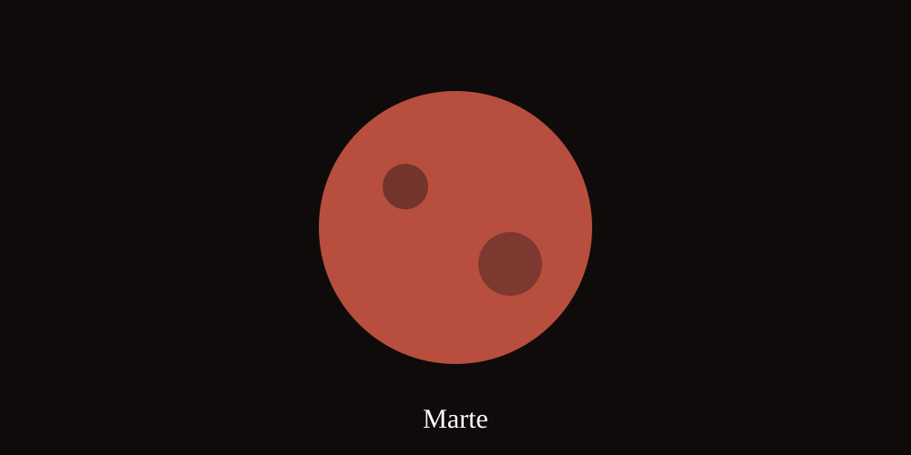

Curiosidades del espacio
- Un día en Venus dura más que su año.
- Júpiter es el planeta más grande del Sistema Solar.
- Marte tiene dos pequeñas lunas: Fobos y Deimos.
- Saturno destaca por su espectacular sistema de anillos.

Video
Coloca tu archivo de video en la carpeta recursos con el nombre video.mp4.